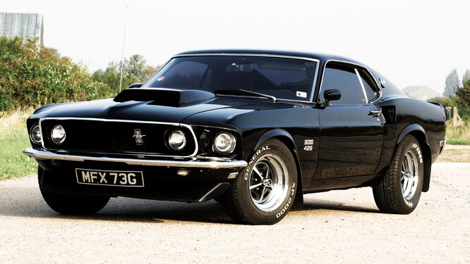

|  | |
| Источник: Wikipedia ® | |
|
Ford Mustang — культовый автомобиль класса Pony Car производства Ford Motor Company. На автомобиле размещается не эмблема Ford, а специальная эмблема Mustang. Изначальный вариант 11233 (1964/65—1973 гг.) был создан на базе агрегатов семейного седана Ford Falcon (создатель Ли Якокка и его команда). Первый серийный Mustang сошёл с конвейера 9 марта 1964 года как модель 1965 года (в среде коллекционеров относительно Mustang выпуска до осени 1964 года употребляется неофициальное обозначение «модель 1964 1/2»). 17 апреля автомобиль был представлен публике в Нью-Йорке, а 19 апреля — показан по всем трём американским телевещательным сетям. Продвижение автомобиля сопровождалось активной рекламной кампанией. Это была одна из самых удачных премьер в истории автомобилестроения. Первый Mustang покинул конвейер утром 9 марта 1964 года, а к концу этого же года было продано 263 434 машины. В качестве основы для дизайна Mustang был использован стилистический «ключ» люксового купе Continental Mark II середины пятидесятых годов — с характерными пропорциями с длинным капотом и коротким багажником и пластикой боковины кузова с изломом над аркой заднего колеса. Базовый двигатель представлял собой хорошо известную в США рядную шестёрку от Ford Falcon с увеличенным до 170 кубических дюймов (~2,8 л.) рабочим объёмом, он агрегировался с обычными серийными трансмиссиями — трёхступенчатой механической или двух либо трёхступенчатыми автоматическими. |
|